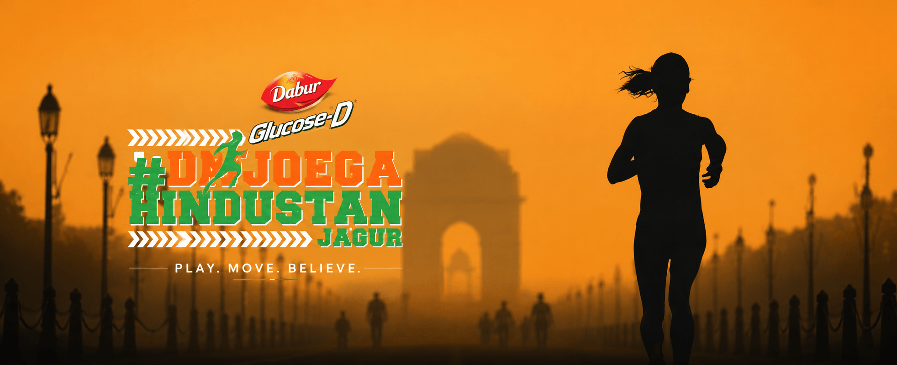
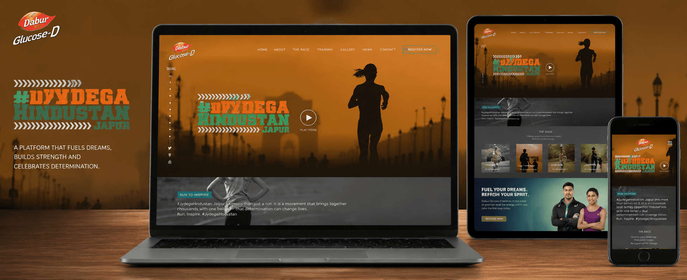
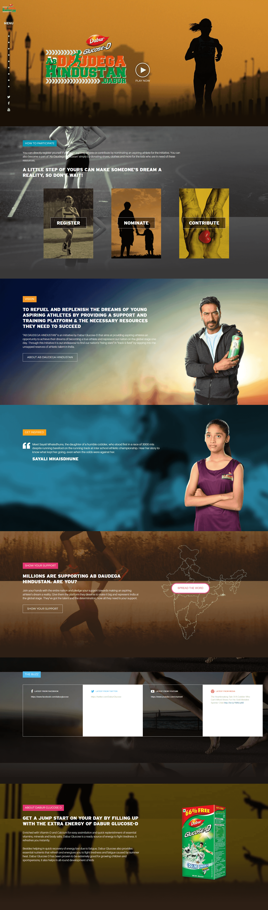
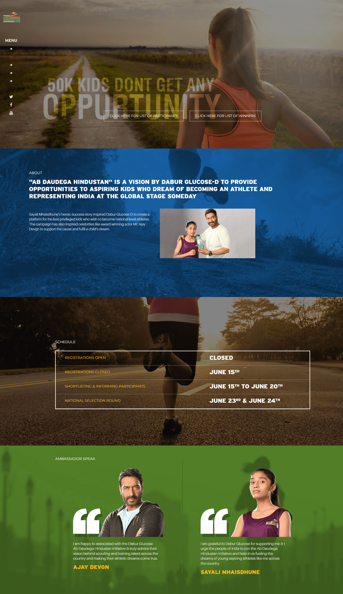
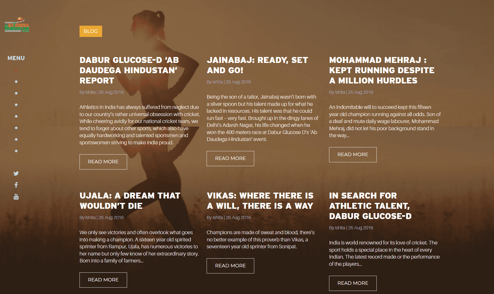

Capture the movement, ambition and national scale of the initiative without allowing campaign spectacle to overpower essential information.
← Back to workA nation invited
Dabur Glucose-D · Contest Website
A nation invited
to run.

Project overview
Turn inspiration
into participation.
Dabur Glucose-D created Ab Daudega Hindustan as a national talent hunt for aspiring track-and-field athletes aged 11 to 16.
The website had to carry the energy of the initiative while doing practical work: explain the contest, build trust, guide online entries and make the opportunity accessible across devices.
- Purpose
- Talent Discovery
- Core task
- Online Entries
- Experience
- Interactive + Clear
- Reach
- Search Ready
The human spark
One barefoot win.
Thousands of possible starts.
The initiative drew inspiration from Sayali Mhaishunde, a 14-year-old Mumbai athlete and cobbler's daughter who won a race despite running barefoot.
Her story represented the many young athletes whose ability can remain unseen when resources, training and opportunity are out of reach. The platform was designed to help more of them step forward.
The digital challenge
Hold the emotion.
Remove the friction.
Turn interest into a simple, understandable application procedure that works confidently across desktop, tablet and mobile.

The participation journey
From curiosity
to a completed entry.
- 01
Discover
Search-friendly content and campaign storytelling introduce the opportunity.
- 02
Understand
Eligibility, race details and training information make the next step clear.
- 03
Apply
A focused online procedure turns intent into a contest entry.
- 04
Stay inspired
Athlete stories and updates keep the platform useful beyond registration.
The website system
Built for action.
Rich with belief.
The experience balances campaign drama with functional clarity—using movement, content and strong signposting to support every stage of participation.
The complete journeyStory, race, training, participation and updates

Entry with clarityInformation structured around confident participation

Stories that keep runningAthlete journeys give the initiative a human voice

Platform principles
Every screen
keeps the race moving.
Responsive by design
The experience preserves hierarchy, imagery and entry clarity from large screens to phones.
Engaging, not distracting
Motion-led imagery and athlete stories create energy while navigation stays direct.
Application first
Clear calls to action and practical information support the core conversion: a valid entry.
Built to be found
Structured, indexable content gives the initiative a stronger foundation for organic discovery.
The outcome
A campaign became
an accessible pathway.
The website connected national ambition with individual action—giving young athletes and their families one responsive place to understand the initiative, enter and stay inspired.
Clearer access
Contest details and eligibility are organised around the questions participants need answered.
Stronger participation
The online-entry journey turns campaign attention into a practical next step.
Human momentum
Real athlete stories keep the purpose visible beyond a single campaign moment.
Talent can begin anywhere.Opportunity should be easier to reach.
More work
View all workOne8 Select.
Built to lead.
Building a platform with purpose?